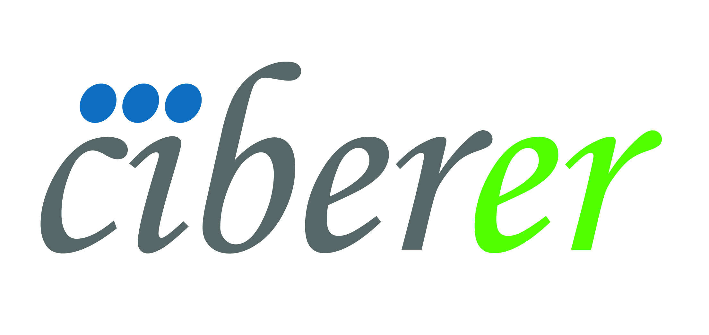

<!--
  ~ Copyright 2015-2016 OpenCB
  ~
  ~ Licensed under the Apache License, Version 2.0 (the "License");
  ~ you may not use this file except in compliance with the License.
  ~ You may obtain a copy of the License at
  ~
  ~     http://www.apache.org/licenses/LICENSE-2.0
  ~
  ~ Unless required by applicable law or agreed to in writing, software
  ~ distributed under the License is distributed on an "AS IS" BASIS,
  ~ WITHOUT WARRANTIES OR CONDITIONS OF ANY KIND, either express or implied.
  ~ See the License for the specific language governing permissions and
  ~ limitations under the License.
  -->

<link rel="import" href="../bower_components/polymer/polymer.html">
<link rel="import" href="jso-styles.html">

<dom-module id="welcome-web">

    <template>
        <style is="custom-style" include="jso-styles"></style>
        <style>
            .center {
                margin: auto;
                text-align: justify;
                font-size: 18px;
                color: #797979;
            }
        </style>

        <!-- This is where main application is rendered -->
        <div class="center">
            <br>

            <div>
                <div>
                    
                    <span style="font-size:50px">Bier-GA 0.0.1</span>
                </div>
            </div>


            <!--<span style="font-size:50px">BierTool 0.0.1</span>-->

            <h2>Overview</h2>
            <p>
                Welcome to the Genome Analyzer tool of the BIER (the Team of BioInformatic for Rare Diseases). This interactive tool allows finding genes affected by deleterious variants that segregate along family pedigrees, case-controls or sporadic samples.</p>
            <br>
            <h2>Supported by:</h2>
            <div class="paragraph">
                
                
                
                
                
                
                
                
            </div>
            <h4>Note:</h4>
            <p style="font-size:14px">
                BierTool web application makes an intensive use of the HTML5 standard and other cutting-edge web technologies such as Web Components,
                so only modern web browsers are fully supported, these include Chrome 49+, Firefox 45+, Microsoft Edge 14+, Safari 10+ and Opera 36+.
            </p>
            <br>
            <br>
            <br>

        </div>
    </template>

    <script>
        Polymer({
            is: 'welcome-web',
            properties: {
                opencgaClient: {
                    type: Object
                },
                host: {
                    type: String,
                    value: "http://bioinfodev.hpc.cam.ac.uk/hgva"
                },
                userId: {
                    type: String,
                    value: ""
                },
                project: {
                    type: String,
                    value: ""
                },
                study: {
                    type: Object
                }
            }
        });
    </script>
</dom-module>
